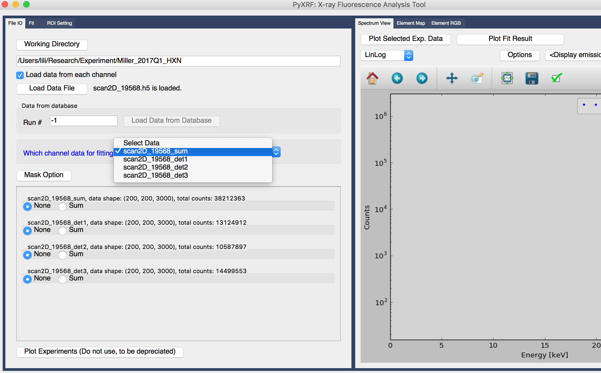

Load data into pyxrf¶
Load hdf5 file into pyxrf¶
- Define working directory by selecting “Working Directory” button, shown in figure 1.
- After selecting working directory, you can load hdf5 file by clicking “Load Data File” button as shown in figure 1. This is an example data from HXN beam line at NSLS II. (Currently we mainly support hdf5 file.)
Figure 1. Load hdf5 file into pyxrf
- Once the data is loaded, you can see the name of the data set, scan2D_19568_sum, which is just next to blue label “which channel data for fitting” as shown in figure 2. The “_sum” in the name means this is the pixel summed data from three detectors, say vortex detector.
Figure 2. Select which data set to work on
In order to plot the spectrum, You can click “Plot Selected Exp. Data” on the right part of the GUI, as shown in figure 2.
As default, we only load the summed spectrum. If you also want to load spectrum from each vortex detector, click the checkbox “Load data from each channel”, and load hdf5 file again. This time you can select either the summed spectrum from all the detectors or only from one detector to work on, shown in figure 3.
Note
Most of the time, if detectors are well aligned, we only need to load the summed spectrum of all the detectors and work on it.
Figure 3. Select more data sets from different detectors
Structure of hdf5 file¶
Please download a standard hdf5 file from the link https://drive.google.com/file/d/0B45Mm22EF9TNQzFkSW0xa01mbkE/view This hdf5 file mainly contains spectrum from 3 detectors, positions of x,y motors and scalers for normalization. Please create hdf5 file with a similar structure in order to use PyXRF.
For test purposes, a parameter file (https://drive.google.com/file/d/0B45Mm22EF9TNYW11OXozRXVic1E/view) is also provided for users to do fitting for this standard hdf5 file. However, you should never create parameter file manually. Parameter file can be easily created during the step of automatic peak finding.
Other format¶
Input of spec file for PyXRF
Users can transfer spec file to hdf file that pyxrf can take. Please see examples at https://github.com/NSLS-II/PyXRF/blob/master/examples/specfile_to_hdf.ipynb